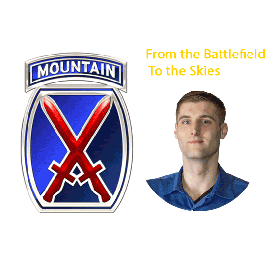

Personal Info
I am currently majoring in Information Management and Technology. While I find technology fascinating and recognize its growing importance, this field is a fun stepping stone toward my ultimate goal of becoming a commercial airline pilot.
Notable Accomplishments
Some of my notable accomplishments include earning an associate degree in Counter Terrorism, serving in the U.S. Army as an infantryman, and being part of the color guard for Fort Drum's division change of command ceremony. I am also proud to have received an AAM commending me for my service.
Through my military experience, I've gained skills in team coordination, leadership, and combat readiness, including graduating from combative school.
Skills
- Team coordination
- Leadership
- De-escalation
- Expert Rifleman
Personal Interests
Outside of work, I have a passion for traveling to new destinations and experiencing different cultures. I also enjoy riding my motorcycle and exploring the open road. My journey has taken me from serving on the ground as a soldier to pursuing my dream of flying airplanes professionally.
I look forward to combining my skills, experiences, and passions as I continue to grow personally and professionally.